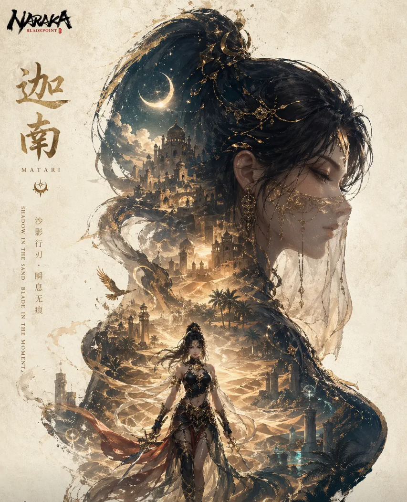

迦南是《永劫无间》开服英雄，定位高机动刺客，以隐身和瞬移为核心，兼具单排收割与团队辅助能力，背景神秘美艳：
背景：火罗贫民窟孤儿，被师父赐名 “迦南”（神鹰圣女传承名，代价寿命减半），表面舞娘、实为宝藏猎人，为守护火罗与特木尔从世仇变战友，故事充满牺牲与羁绊。
技能：
F1 追魂・连闪（单排核心）：2 次瞬移，位移逃生 / 进攻；
F2 追魂・突刺（连招启动）：破蓝霸体僵直，接蓄力；
V1 寂静暗刑（团队）：群体隐身 + 吸血 + 重置技能，撤退 / 转点神技；
V2 寂静暗刑・夺命（单排）：单体隐身增伤，瞬移踢人破霸体。
玩法：单排 F2+V2 打爆发，利用瞬移无敌帧躲控制（宁红夜大招）；团队 F1+V1 保队友，隐身规避钩锁追击。
武器：太刀 / 长剑（连招流畅）、双节棍（突刺接蓄力），多建筑地形拉扯，空旷区谨慎接战。
新手建议先练 F2 突刺连招，熟悉大招时机，进阶用瞬移振刀和踢人打断，灵活切换进攻 / 逃生节奏～
